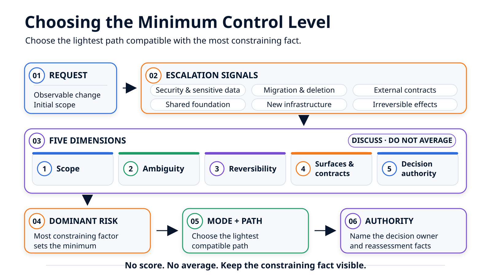

Four Modes, Two Paths: Choosing the Right Level of Control¶
Fixing a label, adding a local action, implementing end-to-end pagination, and discovering that a shared primitive must change should not produce the same execution brief. Let us use these four concrete situations to choose the context, validations, and decision authority each one actually requires.
In the previous article, we prepared the ground and sketched out the form of an execution brief and the report expected after execution. Let us now return to the point before either is produced: the rules, areas, and commands are known, but an agent-ready repository does not, by itself, determine how much structure each request deserves.
Imagine that four situations arise during the same morning in the customer directory:
- replace “No results” with “No customers match these filters”;
- add a “Reset filters” action using the existing mechanisms;
- add server-side pagination to the API and interface;
- discover, while investigating pagination, that synchronizing it with the URL would require the shared router to evolve.
A good coding agent can probably modify all four areas. That is not the right question. We need to decide what we authorize it to decide, which context we provide, which facts we want to review, and which discoveries must stop the work.
The foundational article, From Vibe Coding to Verifiable Agentic Development, distinguished four modes of agent-assisted development. We will now apply them to these concrete situations.
The right level of control is the lightest process that makes risk, scope, and decision authority visible.
One Morning, Four Situations in the Same Customer Directory¶
A first pass already points to four different treatments.
| Request or discovery | Dominant observed fact | Initial mode | Path |
|---|---|---|---|
| Fix the empty-state label | Local, visible, and reversible change | Controlled Vibe Coding | Lightweight, direct |
| Add “Reset filters” | Several steps, but one product area and existing contracts | Guided Coding | Lightweight, tracked |
| Add server-side pagination | API, interface, internal contract, and tests must evolve together | Structured Feature | Orchestrated |
| URL synchronization requires the shared router | Shared primitive with multiple consumers | Foundation Evolution, if this requirement is retained | Orchestrated, as separate work |
This table gives the result. Let us now see what each decision actually changes for the agent.
Situation 1: Fix the Empty-State Label¶
The request is precise: when filters return no customers, the interface must display “No customers match these filters.”
In our example repository, the empty state and its test live under frontend/customers/**. The execution brief can fit in a few lines:
Objective: change the filtered empty-state text.
Writable area: frontend/customers/**.
Context: reuse the feature-local translation and the existing test.
Validation: run the targeted empty-state test, then review the diff.
Stop if: the text comes from a generated file or a shared primitive must change.
The agent locates the source, changes the label and its test, runs the targeted validation, and then presents the diff. It does not need a full-stack plan to follow this sequence.
The word controlled remains essential. The agent does not receive “fix this however you want”; it receives an area, a convention to reuse, a validation, and a boundary. If the targeted test passes, we know only that this test passed in the local environment and that the diff is available for review. We are not claiming to have validated the entire application.
Situation 2: Add “Reset Filters”¶
This time, clicking the action must restore the filters to their initial values and reload the directory. The design-system button, the reset function, and the directory-loading mechanism already exist.
The request remains local, but it requires several integration choices. A short brief settles them before coding begins:
Expected behavior:
- in the empty state, display “Reset filters” when at least one filter is active;
- on click, clear the filters and reload the directory;
- preserve the existing loading, empty, and error states.
Reuse:
- the existing Button component;
- the existing resetFilters() function;
- the current reloading mechanism.
Non-goals:
- create a new API route;
- modify `shared/state/**` or the shared `Button` component.
Stop if: a permission, dependency, or shared primitive becomes necessary.
The mini-plan can then be very concrete:
- connect the existing action to the feature's empty state;
- add a test verifying that the click clears the filters and triggers a reload;
- run the feature tests and review the diff.
Lightweight tracking—a brief, plan, checklist, and short work log—makes it possible to resume the work and see what was validated. The log is useful, but it is still written by the agent; it is not independent evidence.
This is Guided Coding. The task is nontrivial, but its outcome, likely paths, and conventions to reuse are known. If exploration reveals that a new API route is required, the request does not silently expand: the work stops and must be reclassified.
Situation 3: Add Server-Side Pagination¶
The phrase “add server-side pagination” hides several coordinated decisions:
- the API must accept the pagination parameters defined by the project's conventions;
- its response must provide the items, current page, and total result count;
- the interface must load the first page and allow users to navigate;
- the
loading,empty, anderrorstates must continue to work; - the default page size and behavior for an invalid page must reuse an existing convention or be decided before execution;
- the contract change must remain compatible with its current consumers.
In our teaching example, the convention already exists: the page size is 25 items, and an invalid page returns HTTP 404 with the code pagination_page_invalide. These choices go into the brief; the agent does not have to reinvent them during implementation.
Before coding, the contract decisions must therefore be made explicit and their owner identified. Even before the plan is compiled, the surfaces that must be coordinated are visible:
| Surface | Expected change | Dependency to respect |
|---|---|---|
Customer API — backend/customers/** |
Paginate the response and cover boundary cases | The selected contract and its known consumers |
Directory interface — frontend/customers/** |
Consume the metadata and display navigation | The same contract, without reinventing it in the interface |
| Integration | Verify consistency across both sides and the existing states | Backend and frontend completed |
The next article will turn this map into an executable plan. At this stage, it is enough to show why a single brief followed by unrestricted modification would be fragile. The path will need to retain the brief, plan, write boundaries, human decisions, validations, and observed results. An agent can then receive prepared context for executing a coherent block of tasks instead of reconstructing the mission from the project's entire history.
This is a Structured Feature following an orchestrated path. The difficulty does not necessarily come from the volume of code; it comes from the coupling between several surfaces and the contract decision they share.
Discovery 4: URL Synchronization Requires the Shared Router¶
Finally, suppose the team wants to make the current page shareable through a URL such as /customers?page=3. Exploration shows that the shared router does not yet support this case and that shared/routing/** is a protected area for the product task.
The right output from the agent is not an opportunistic router change. It is an actionable stop:
Finding: synchronization requires a capability missing from the shared router.
Boundary: shared/routing/** is outside the feature's write scope; it remains available read-only.
Options:
1. keep the page in local state and ship without a shareable URL;
2. open a separate effort to evolve the router, including a consumer impact review.
Decision needed: determine whether URL synchronization is required for this release.
The workflow may detect that a diff crossed into shared/routing/**, but that check happens after the write. The better outcome is therefore for the agent to apply the stop condition as soon as it understands the dependency. No mechanical check can infer every architectural requirement on its own.
If the team chooses the second option, the new effort's input must identify the router's consumers, expected compatibility, transition, rollback, broader validations, and the owner authorized to accept the impact.
This is Foundation Evolution. It follows an orchestrated path, but as a separate unit of work. The product need explains why the primitive may have to evolve; it does not authorize silent changes to whatever parts of the foundation the feature happens to need.
Characterizing Pagination in Concrete Terms¶
The four examples show the outcome. To make the decision reproducible, let us return to pagination and apply the decision model in order.
Gate 1: Look for Anything That Rules Out a Lightweight Start¶
Some facts impose a minimum level of control before any broader assessment.
| Signal to check | What the pagination ticket shows | Consequence |
|---|---|---|
| Security, authorization, or sensitive data | No new authorization rule or use of sensitive data | No escalation on this point |
| Data migration or deletion | No migration planned | No escalation on this point |
| New dependency or infrastructure | Explicitly out of scope | Stop if it becomes necessary |
| Public or external contract | Internal API contract, with consumers to inventory | API owner's approval |
| Shared foundation or common rule | No shared change planned | Stop if the router or a shared primitive must evolve |
| External effect that is difficult to reverse | No external effect planned | No escalation on this point |
No signal turns pagination into security, migration, or foundation work here. The internal contract does, however, prevent us from treating the request as a local fix.
Gate 2: Answer Five Observable Questions¶
The five dimensions do not produce a score. They force us to write down what we actually know.
| Question | Where to look | Answer for pagination |
|---|---|---|
| Scope: which areas must change? | Repository tree, owners, and responsibility areas | Customer backend, customer frontend, and associated tests |
| Ambiguity: can we write the acceptance criteria without inventing a decision? | Request, conventions, and remaining open questions | Clear product outcome; exact contract shape to confirm |
| Reversibility: does a Git revert remove the entire effect? | Persistent data, consumers, and external effects | No migrated data, but API and interface must be rolled back together |
| Surfaces and contracts: who consumes what is changing? | API calls, shared types, clients, and tests | Interface and internal API coupled through one common contract |
| Authority: who can accept the consequences? | Module and contract owners | Feature owner and API owner |
The dominant risk is now visible: several surfaces must evolve around a common internal contract. That is enough to select a Structured Feature, even without a migration, dependency, or public contract.

Mode, Path, and Tool: Three Different Questions¶
The examples now let us distinguish these three concepts without adding more theory.
- The mode explains why the change requires this level of governance: local, guided, structured, or shared.
- The path describes what will actually happen: inputs, steps, tracking, checks, validations, and review.
- The tool executes some or all of the path: Markdown files, scripts, a coding agent, or an orchestration platform.
The mode therefore does not depend on the chosen tool. Changing the model or interface does not turn a migration into a local fix. Conversely, a team does not need a complete orchestrator to review a small diff properly.
Two Paths as Work Sequences¶
The four modes do not require four execution pipelines. Two paths, with proportionate variants, are enough.
| Case | Concrete sequence | What remains to be reviewed |
|---|---|---|
| Lightweight, direct — Controlled Vibe Coding | Bounded request → local rules → modification → targeted test → diff | The diff, the command that was run, and its result |
| Lightweight, tracked — Guided Coding | Short brief → mini-plan → checklist → modification → declared validations → log → diff | The plan followed, deviations, validations, and diff |
| Orchestrated, product — Structured Feature | Decision → clarified brief → bounded tasks → execution context → modifications → checks → declared validations → diff → local review | Decisions, boundaries, per-task results, the status of declared validations, and local evidence |
| Orchestrated, shared — Foundation Evolution | Impact proposal → identified owner → separate work → modification → compatibility → broader validations → dedicated review | Affected consumers, transition, and approval role |
On the lightweight path, the agent may maintain the tracking itself. This helps resume and review the work, but it does not become an independent attestation.
On the orchestrated path, the workflow separates responsibilities further: the agent proposes and modifies; the workflow checks boundaries, the presence and shape of outputs, and declared validations; the human decides whether those facts are sufficient. The absence of any declared validation—and any declared validation that was not run—must remain visible. Path checks remain post-write checks, not a sandbox.
Three Cases That Often Mislead¶
Line count remains a poor shortcut. These three counterexamples show why.
| Initial impression | Dominant fact | Better decision |
|---|---|---|
| “It is only a three-line permission condition.” | It changes who can view or modify data | Structured Feature with an explicit security decision; Foundation Evolution if the rule is shared |
| “The rename touches forty files, so everything must be orchestrated.” | Mechanical transformation within one area, with no public contract or persistent data | Guided Coding, lightweight tracked path, targeted validations, and a mechanical diff that is easy to review |
| “Just add an Export CSV button.” | Exploration reveals that no export route or permission rule exists | Stop the guided task; reclassify it as a Structured Feature with product and security decisions |
A small modification can therefore require approval from someone with broader authority. A large diff can remain reversible and unambiguous. What matters is the effect of the change, not its apparent size in Git.
The Mode Is a Revisable Hypothesis¶
The initial classification is never permission to expand the scope. Exploration may reveal a dependency, external contract, migration, or shared primitive missing from the original ticket.
The fourth situation illustrates this principle: URL synchronization requires shared/routing/**, which is outside the write scope. The product task must then produce three things:
- the new fact: the shared router does not cover the need;
- the options: ship pagination with local state, or open a Foundation Evolution effort;
- the resumption decision: new scope, new owner, and new validations, or keep the item as a non-goal.
For the rest of the series, the decision is to keep URL synchronization as a non-goal. Pagination may continue without changing the router. Any future Foundation Evolution effort will remain separate work.
This controlled reclassification matters more than a perfect taxonomy at the outset. A good decision model does not try to predict all the code. It makes the facts that require a new decision visible.
The Record the Next Article Will Actually Receive¶
The decision can now be reviewed without reopening the conversation. For pagination, the final record looks like this:
# Decision — Customer Directory Pagination
Request: add server-side pagination to the customer directory.
Observable outcomes:
- the API returns the items, current page, and total result count;
- the directory loads the first page when opened;
- users can move forward and backward without going past the first or last page;
- the loading, empty, and error states remain distinct.
Assessment findings and scope assumptions:
- expected writes under backend/customers/** and frontend/customers/**;
- internal API contract to evolve in a coordinated way;
- page size set to 25 by the existing convention;
- invalid page handled with an HTTP 404 response and the code
`pagination_page_invalide`;
- no external effect to undo, but API and interface must be rolled back
together if the change is abandoned.
Non-goals:
- synchronize the page with the URL;
- modify the router or another shared primitive;
- add a dependency;
- migrate or restructure data.
Decision:
- mode: Structured Feature;
- path: orchestrated;
- roles to involve: feature owner and API owner;
- minimum input: clarified brief, acceptance criteria, and non-goals;
- minimum output: bounded tasks, checks, results from declared validations,
a reviewable diff, and human review.
Reassess if:
- a product decision remains open before execution;
- a consumer requires an incompatible contract;
- the implementation would violate any of the non-goals.
In another repository, the page size or invalid-page behavior may not be defined. They then become questions for the brief: execution waits for their resolution instead of turning silence into a product decision.
This record selects the level of governance. It does not replace the task contract presented in the previous article: that contract will then define the paths, references, validations, and stop conditions for the executable work.
For another request, the template can remain short:
Request and observable outcomes:
Findings, assumptions, and non-goals:
Selected mode and path:
Initial scope:
Minimum input and output:
Approval role to involve:
Reassess if:
Conclusion¶
Choosing a mode means preparing a proportionate execution brief. For the label, one area, a targeted test, and a diff are enough. For the local action, a brief and mini-plan make the work resumable. For pagination, multiple surfaces and a shared contract justify bounded tasks, recorded control results, and structured review. For the shared router, product work stops and Foundation Evolution is handled separately.
The repository sets the rules of the terrain. The mode characterizes the change. The path organizes the work. And the record identifies the human role that must accept the decisions and residual risk.
Pagination is now classified as a Structured Feature, its path is selected, and its reassessment conditions are written down. The next article starts from this decision and follows the feature end to end, from a clarified brief to local review.